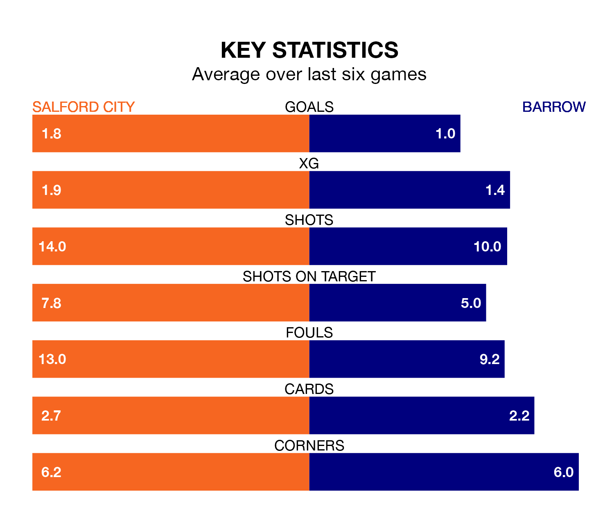

Salford City face Barrow on Saturday seeking to protect their long unbeaten run in EFL League Two.
The Ammies are unbeaten in seven, with three wins and four draws, ahead of the 3pm kick-off.
They face a Barrow team who have won two and drawn two over the same number of games.
In Matt Smith, Salford have one of the league's most on-form strikers so far this season. He has notched 19 goals in 32 appearances, to sit second in the scoring charts.
His goal rate of one every 138 minutes is slightly quicker than that of Ben Whitfield, Barrow's top scorer with a goal every 144 minutes, and a total of seven goals in 22 games.
In the last 10 years, Salford and Barrow have played each other on nine occasions. Salford won four of them, Barrow one, and they drew four times.
On average, the Ammies scored 1.4 goals and the Bluebirds 0.9 in those matches.
Their last meeting was on October 28, when they played out a 0-0 draw.
The Bluebirds are fifth in the table after 32 games, of which they have won 14 and drawn 11, earning 53 points.
City are 14 places behind the away side in 19th, with nine wins and nine draws putting them on 36 points.
With 44 goals in 32 games so far this season, Barrow are scoring at below the league average rate with 1.4 goals per game. But they are conceding fewer than average too, letting in 34 goals at a rate of 1.1 per game.
The Ammies are also below average scorers, with 1.4 goals per game, compared to a league average of 1.5. They have conceded 1.7 goals per game.
Salford's last match was on Tuesday, a 2-2 draw against Doncaster Rovers, with Luke Garbutt and Richard Wood (own goal) getting the goals for the Ammies.
Barrow lost 2-1 against Forest Green Rovers last time out, also on Tuesday, with Cole Stockton on the scoresheet.
Updated: 12:06 (UTC), 15/02/24